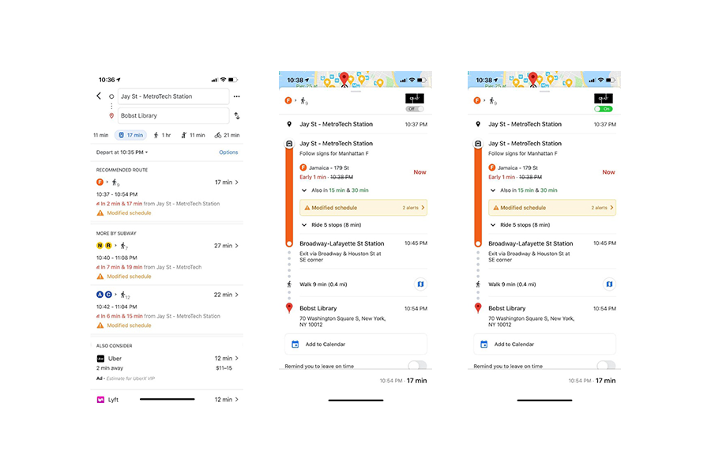

The most common related problem encountered by tourists in NYC MTA is getting in on the wrong side of a station where you can't cross from one side to the other without leaving the station.
Based on my problem statement, I conduct both qualitative and quantitative user research, user interview and survey. For the interview, I got 4 participants who took the NYC MTA before; and there are 13 valid responses I got in the user survey.
According to interview data, I found 4 features that users care most about when they’re facing the problem. First, all of the interviewees mention that they hate to pay twice but they have no choice when they’re in a rush or no MTA staff around. Second is that they blame unclear signs of direction is the main reason for the problem. Among all the interviewees, some of them mention they don’t like to waste their time on finding the right entrance or walking all the way back to the ground. Some of them mention the hidden problem of accessibility in MTA bc passengers with disabilities might encounter this problem more often, but they need to make more effort to solve the problem.
According to survey data, I found we have high demand for MTA which means that we can’t not give up on it and say oh that’s walk. We have to find a solution sooner or later. Every respondent has encountered the situation but not frequently and they all felt depressed when facing the situation.
In the survey, I ask them to rank the possible reasons for the problem, most of them blame the unclear entrance instruction rather than blaming their inattention. As for the solution, they prefer visual design and some of them think connecting with digital devices is a good idea. I took this result and map out the user journey map and persona.
Users usually feel alright until they find they’re in the wrong platform with no underpass. They have to walk the way back to street and find the entrance again. The process is time-consuming as well as tiring. Another point they feel frustrated is when they found out they pay twice due to a rush.
Reduce the chances of detours and duplicate payments when finding MTA entrance
Before getting into my prototype design, I'd like to mention two relevant designs in competitive analysis. Omny, you might see it in some MTA stations. It’s a tap-to-pay system using contactless cards or smart devices to make fare payments at MTA. Although It’s very intuitive, it’s just a charging machine.
I believe everyone has used google map before. For me, I use it almost everyday for not only finding my way but also checking the subway schedule. Overall, google map is very functional and useful, yet there’s a drawback that MTA usually has a lot of entrances but Google map doesn’t show its detail when approaching the entrance. This’s one of the reasons for our problem.
I believe that optimizing the direction instruction on the ground and underground entrance of subway station will improve user experience of getting into wrong platform for variety of groups including the elder, disability, and tourist...etc. With technology, I redesign the entrance system considering the current MTA development and users' need.
I expect the change will result in reducing unnecessary time for finding platform, reducing duplicate payment and an more accessible environment for passenger.
The solution is to extend the OMNY system to a mobile app which includes user's MTA record and preplan system. In the meanwhile, since people are highly dependent on google map when taking MTA, it’ll be more efficient and acceptable for the public adding new functions on the app they’ve already used. Thus, I combine OMNY app and Google Map to create a pre plan system that prevents detour and double payment in the MTA system. Users can use both the OMNY app and Google Map to pre plan your route and set up a detour alarm. Before getting into the entrance, you can tap your phone on the OMNY information machine on the ground and see if it’s the right entrance you want. This prevents users from going down the wrong entrace. Also, You're able to check again before entering the platform, so the chance of duplicate payment can be greatly reduced.
I was inspired by the cooperation mode between google map and uber. Google map provides the uber option when planning routes, and once you click it will connect to the Uber app directly.


OMNY app.
OMNY plugin in Google Map.